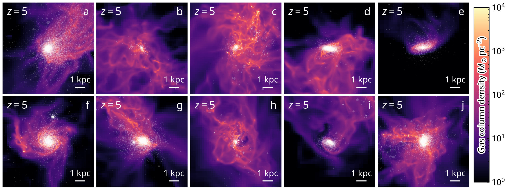

The Simulating Clustered stAR Formation (SCARF) project is a suite of cosmological hydrodynamic simulations resolving the formation of star clusters in the early Universe.
Giant molecular clouds are the cradles of star clusters, in which most stars form, particularly in the early Universe. Understanding the modes and the efficiency with which stars and clusters form remains a central challenge in modern astrophysics.
We develop a continuous star cluster formation model in the cosmological hydrodynamic code ART to simulate the effects of clustered star formation during the Cosmic Dawn on the observational properties of the earliest galaxies by the Hubble and James Webb Space Telescopes. The figure in the left shows sketch of a star-froming cloud in simulations.
We kindly request you to cite the following papers when referring to the SCARF simulations:
SCARF: Simulating clustered star formation in the early galaxies
Chen, Gnedin, Li, Semenov, & Gieles (2026) to be submitted.

Gas column density projections of ten simulated galaxies at z = 5. Star clusters are shown as circles.
Our data will be publicly available once we publish the first paper.
© 2026 — The SCARF Team